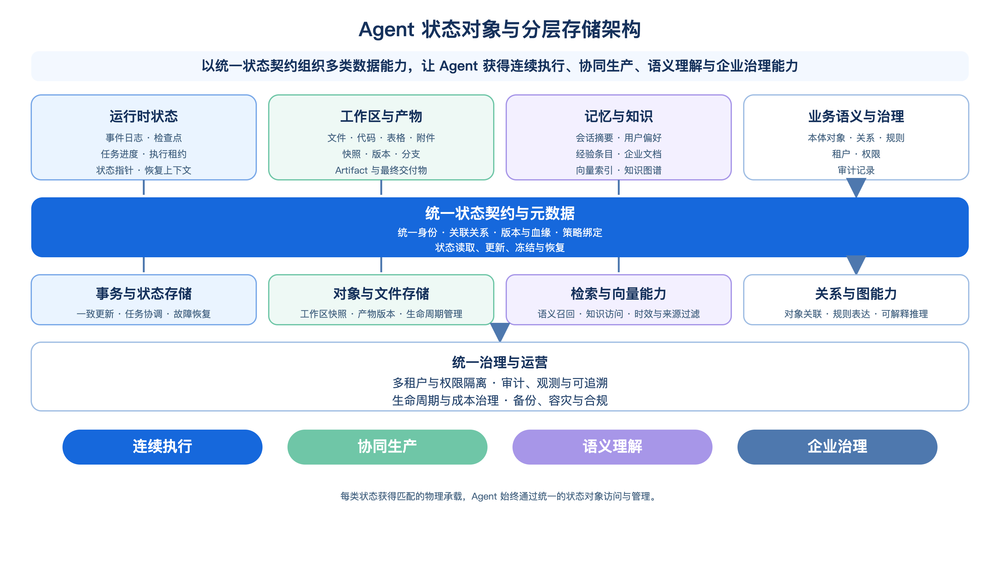
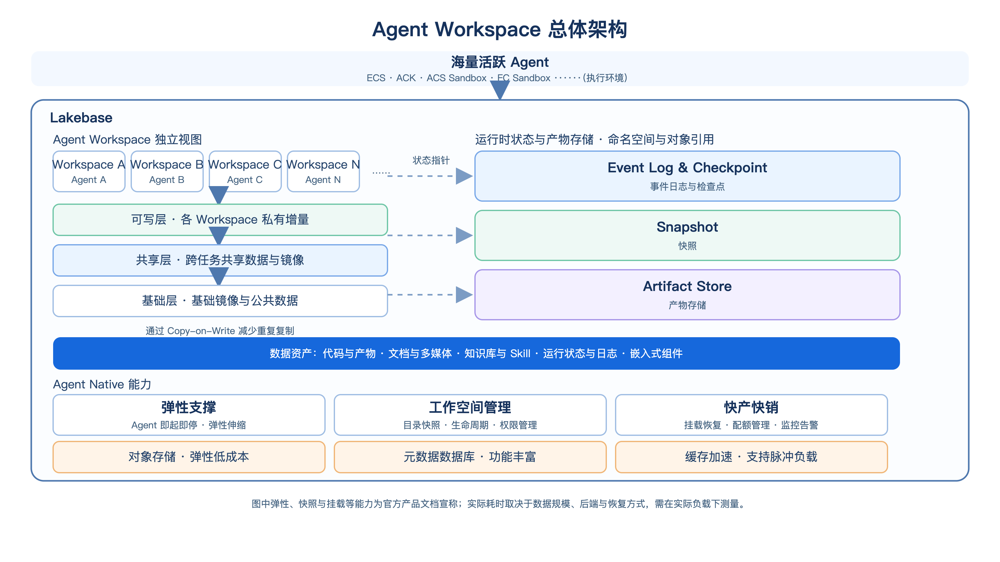
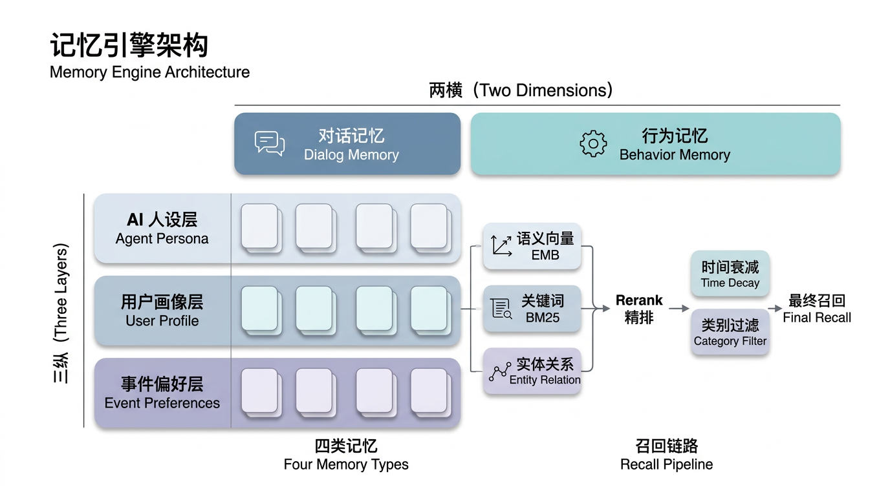
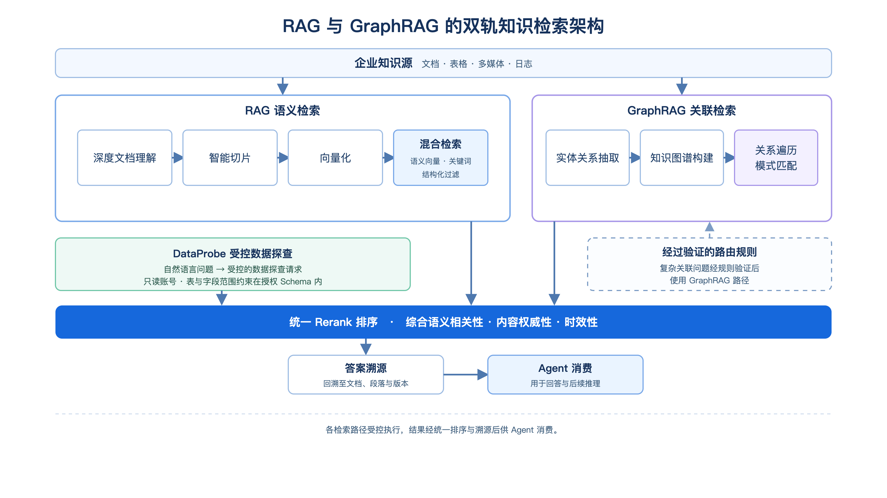
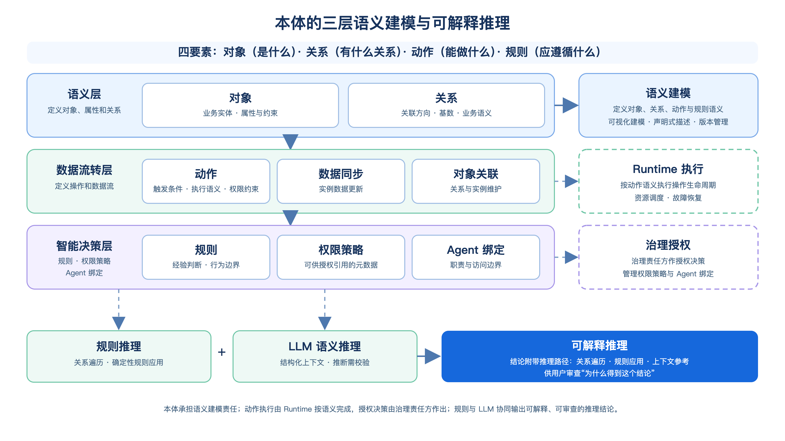

第 8 章 Agent 状态存储与语义资产¶
第7章讨论了执行环境、状态关联与任务续行。本章进一步回答：需要持久化的任务事实、工作区和语义资产，由什么系统承载，各自需要满足哪些一致性、访问和治理要求。
Event Log 与 Checkpoint 为故障恢复提供依据，工作区快照与 Artifact 保存环境版本和任务成果，长期记忆积累经过筛选的经验，RAG（Retrieval-Augmented Generation，检索增强生成）知识库提供可检索的外部知识，本体则显式组织业务对象、关系与规则。这些对象可以共享基础设施，但不能因此省略各自的正确性要求。
本章沿着“分层地图—运行状态与工作区—记忆、知识与本体—平台治理”的顺序展开。构建篇已说明这些逻辑对象如何被 Harness 使用，这里重点讨论其持久化、版本、一致性和生命周期，并以 Lakebase 的参考架构说明各项能力如何组合。
第一部分 总览：状态外置之后，状态由什么承载
8.1 Agent 状态存储的分层地图¶
8.1.1 状态外置之后的存储职责¶
当状态不再依附于任何一个执行实例后，Agent 系统进入了新的架构阶段。系统不再只需要让计算节点随时替换，更要确保任务在跨节点、跨时间以及跨协作角色流转时，始终拥有同一份可信、连续且可访问的上下文。
这使存储层承担了新的职责：它不仅保存数据，还要连接推理、执行、协作与学习。Harness 组织控制循环与执行语义，负责模型、工具与上下文的编排；Runtime 管理执行生命周期、资源调度与基础设施恢复；而状态存储负责让每一次推理和行动都能被接续下去，形成一个可信的过程。
传统应用中的数据分工通常比较清晰：订单、账户、库存等业务事实进入事务数据库；图片、附件和日志进入文件或对象存储；分析任务从数仓或数据湖读取数据。应用逻辑、数据对象和访问路径之间的边界相对稳定。
Agent 则持续地生成和消费状态。以“分析客户流失原因并生成挽留方案”为例，Agent 需要理解任务目标、拆分分析步骤、访问客户资料和历史工单、调用数据分析工具、生成中间表格与图表、根据结果调整计划，并在人工确认后形成最终方案。每一步既产生新的状态，也依赖已有状态继续推进。
如果这些状态没有被可靠承载，任务在实例故障、模型调用超时或人工介入后便无法准确恢复；多个 Agent 虽各自完成局部工作，却无法共享一致上下文；有效策略和用户反馈也难以沉淀为可复用经验。更重要的是，当结果出现偏差时，企业无法还原 Agent 基于什么信息做出判断、调用了哪些工具、修改了哪些对象。
因此，状态外置需要把散落在上下文、实例和工具调用中的信息组织为可寻址、可验证的数据对象。存储层维护这些对象的持久性与访问边界，执行系统据此继续工作。
8.1.2 Agent 需要存储哪些状态：从会话上下文到知识与本体¶
从数据形态看，Agent 的状态不是单一对象，而是一组生命周期、访问方式和一致性要求各不相同的数据集合。它们共同构成 Agent 的外部工作记忆，也共同决定 Agent 能否在一次对话之外持续完成真实任务。
第一类是运行时状态，包括事件日志、检查点、任务进度、执行租约和状态指针等。它记录 Agent 当前处于什么阶段、已经完成了哪些步骤、哪些工具调用成功或失败，以及下一步应由谁执行。它的核心目标是保障任务可恢复、可迁移、可协调。第 8.2 节将讨论事件、检查点、租约和状态指针如何共同支撑跨副本恢复。
第二类是工作区与产物，包括文件、表格、代码、图表、附件、快照、版本和分支等。它们并非简单附件，而是任务链路的一部分：需要被共享、引用、版本化、快照化，并在必要时回滚到某个可信状态。第 8.3 节将讨论如何把一次性临时目录演进为可协作、可审计的任务资产空间。
第三类是记忆与知识，包括会话摘要、用户偏好、经验条目、企业文档、向量索引和知识图谱等。Agent 不应在每次对话后都回到“零起点”，但也不能让未经验证、已经过期或不应保留的信息持续影响后续决策。第 8.4 节和第 8.5 节将分别展开长期记忆，以及 RAG 与知识库的持久化、检索和治理问题。
第四类是业务语义与治理状态，包括本体对象、关系、规则、租户、权限和审计记录等。它们让 Agent 不只理解自然语言片段，还能理解“重点客户”“负责人”“审批条件”等业务对象的身份、关系和边界。第 8.6 节将讨论本体如何成为 Agent 理解业务世界的语义骨架；第 8.7 节则回到多租户隔离、一致性、生命周期、成本和可观测性等平台问题。

图 8-1 Agent 状态对象与分层存储架构
图 8-1 以四个层次呈现 Agent 状态存储的整体结构：最上层是运行时状态、工作区与产物、记忆与知识、业务语义与治理等面向 Agent 的数据对象；其下是统一状态契约与元数据；再下是事务、对象、检索、关系与图等基础能力；最底层是横跨所有层的统一治理与运营。图中表达的不是某一种数据库的内部结构，而是 Agent 数据平台应提供的能力分工。
这套架构的关键，不是让所有状态落入同一种存储，而是让每类状态获得匹配的物理承载，同时在上层拥有一致的身份、元数据、版本、权限和生命周期。这样，底层可以按对象特性选择合适能力，Agent 却始终通过统一的状态对象访问和管理其任务事实、工作成果与语义资产。
8.1.3 不同状态对象的一致性要求¶
不同状态对象的差异，最终会体现为不同的一致性与访问要求。运行时状态保存的是任务事实：某个步骤是否已完成、某次工具调用是否已经提交、下一位执行者是谁。这类状态需要明确的写入顺序、原子更新、幂等控制和可恢复的历史，否则任务重试就可能重复执行，多个副本也可能对同一任务给出相互冲突的结论。
工作区与产物更关注版本、快照、引用关系和可回滚性。一份分析表格、一条代码分支或一份生成的报告需要能被准确定位到某次任务执行，既可供协作方复用，也能在后续修改出现问题时回到可信版本。记忆与知识则更强调可检索性、时效性、来源可信度和权限过滤：它们允许经过处理和索引后再被召回，但必须能够说明来自何处、适用于什么范围、何时需要更新或遗忘。本体及治理状态还需要维护对象身份、关系完整性、规则边界和审计证据。
因此，一个向量库或一张会话表可以保存部分信息，却无法天然满足所有对象的语义。若把任务事实仅当作可检索文本，容易丢失顺序与原子性；若把工作成果只当作无版本附件，难以回滚和复用；若把记忆、知识和权限混为同一份上下文，又会让过期信息或越权内容持续影响决策。正确的起点不是先选择某一种引擎，而是先定义不同状态对象的正确性边界，再为其匹配相应的存储能力，并通过统一契约把它们组织为一个整体。
8.1.4 分层存储参考架构：Agent 平台需要内建哪些能力¶
以 Lakebase 为参考，可以将平台能力分为两层：底层按对象特性提供事务、文件、对象、向量和图等存储能力；上层统一对象身份、元数据、版本、权限和生命周期。统一访问契约有助于减少应用重复集成，但各对象的一致性和恢复保证仍需分别验证。后续各节沿这一结构展开。
第二部分 存储底座：运行时状态、工作区与快照
语义能力与平台治理都建立在物理底座之上，而底座要回答两个最刚性的问题：任务中断后能否继续，工作成果能否留存。故障、扩缩容、实例迁移随时可能发生，Agent 的任务事实必须不丢、执行必须可续；沙箱中的代码、文件与产物，必须能被快速创建、安全隔离、可靠交付。
运行时状态存储以事件日志、检查点与跨副本恢复为核心；工作区与产物存储以分层视图、写时复制快照与稳定引用为核心。二者通过版本和状态指针关联，共同支撑任务续行。
8.2 运行时状态存储：Event Log、Checkpoint 与跨副本恢复¶
8.2.1 任务与会话状态的存储模型：状态机与合法转换的持久化¶
Agent 的运行过程并不是一次模型调用，而是一段可能跨越数分钟、数小时甚至数天的任务链路。它会在规划、工具调用、等待外部系统返回、人工确认、子 Agent 协作等环节之间不断切换。执行实例可以随时被替换，但任务不能因一次实例重启而失去“已经做了什么、下一步该做什么、哪些操作已经生效”的事实依据。
因此，运行时状态存储的首要目标不是保留全部上下文文本，而是持久化任务的可恢复事实：任务当前所处阶段、已经确认的决策、工具调用的结果、待处理的外部事件，以及继续执行所需的状态指针。它构成 Agent 从“可以一次性完成任务”走向“能够稳定完成长任务”的基础。
8.2.2 Event Log：只追加日志的顺序性与强一致¶
Event Log 是记录任务事实变化的核心机制。每当 Agent 完成一个具有业务意义的动作，例如生成计划、申请执行租约、发起工具调用、收到工具返回、等待人工确认或提交最终结果，系统都会追加一条不可随意改写的事件。这些事件按顺序组合后，便可以还原任务从开始到当前时刻的完整演进过程。
对于运行时状态，顺序尤为重要。假如“发送审批请求”已经成功，却因为结果事件没有被可靠记录而被重新执行，系统就可能向同一位审批人发出多次请求；假如某个子任务已经完成，但父任务没有看到其完成事件，任务编排就可能错误地继续等待。Event Log 的价值，正是在这些边界上提供明确、可追溯的事实顺序。
但“强一致”并不意味着所有 Agent 任务都必须争用同一条全局日志。更合理的边界通常是任务、会话或业务对象：同一任务内部的状态变化需要有明确先后关系，而相互独立的任务可以并发执行。这样既保证了单个任务的正确性，也避免把所有 Agent 工作流锁进一个低效的全局串行系统。
事件记录与当前状态同时维护时，应在事务中提交，或通过可靠的 Outbox 等机制保证最终同步，并以事件标识去重。事件日志只有包含完整的状态变更和必要输入时，才可作为重放依据；诊断日志和模型输出不能直接替代这份记录。
当然，事件并非无限累积。长期任务和高频 Agent 系统会产生大量运行记录，因此平台需要在保留审计事实与控制存储成本之间取得平衡：对近期任务保留细粒度事件，对稳定完成的任务形成可验证快照，并依据业务、合规和审计要求设置保留周期。关键不在于永久保存每一段模型输出，而在于确保影响任务正确性和外部动作的事实始终可追溯。
8.2.3 Checkpoint：快照频率、增量与恢复点目标¶
如果 Event Log 记录的是“发生过什么”，Checkpoint 则记录“任务在某个可信时刻处于什么状态”。当任务已经运行很久，系统若每次恢复都从最初事件开始逐条回放，不仅效率低下，也会增加恢复过程的不确定性。Checkpoint 通过定期保存任务状态快照，使新的执行实例能够从最近的可信恢复点继续工作。
一个有效的 Checkpoint 不应只是模型上下文的简单拷贝，而应包含恢复所需的关键状态：当前任务阶段、已完成步骤、未完成步骤、工具调用结果引用、工作区版本、子任务状态、等待条件以及状态版本等。它让运行时不必猜测“上一个实例执行到哪里”，而是可以基于已经提交的状态继续推进。
Checkpoint 的频率需要与任务成本相匹配。对于只需数秒完成、失败后可以低成本重试的查询型任务，过度频繁地保存快照反而会增加额外开销；对于会调用外部系统、处理长链路数据、需要人工介入的任务，则应在关键边界主动形成 Checkpoint。这里的关键边界通常包括：外部调用发起前后、长时间计算完成后、人工确认前后、工作区发生重要变更后，以及任务准备交接给其他 Agent 时。
增量快照可以进一步降低成本。很多任务的状态变化只涉及局部字段、一个子任务结果或一个新的工作区引用，没有必要在每次变化时复制完整状态。平台可以基于状态版本保存变化集，并在恢复时组合最近完整快照与后续增量。这种机制既保留了恢复效率，也让运行时状态存储能够适应高并发、脉冲式的 Agent 负载。
Checkpoint 还定义了系统的恢复目标。对用户而言，最重要的问题不是底层保存了多少数据，而是实例故障后任务能从哪里恢复、会丢失多少已完成工作、是否会重复执行外部动作。通过对不同任务设定不同的检查点策略，Agent 平台可以在成本、性能与恢复精度之间形成清晰边界。
8.2.4 跨副本恢复与 Durable Execution：事件重放、执行租约与状态指针契约¶
Agent 的执行实例应被视为可替换的计算单元，而不是任务事实的唯一拥有者。当某个实例因扩缩容、故障、超时或升级而退出时，新的实例需要能够接管任务。这一过程通常被称为 Durable Execution，即任务的执行过程不依赖于某个特定进程或特定机器，而依赖于外部持久化状态持续存在。
恢复时，新的执行实例首先读取任务的最新 Checkpoint，再按需回放该快照之后的事件。它不必重新执行已经确认完成的步骤，而是从最近一次可信状态继续。这种“快照加事件”的组合，既避免从头回放所有历史，也避免只依赖单一可变状态而失去过程证据。
跨副本恢复还需要解决“谁有权继续执行”的问题。若旧实例尚未完全退出，新实例又开始恢复，同一任务就可能被两个副本同时推进。因此，系统需要通过执行租约确定当前执行权，并在状态写入时附带版本或围栏标识。可以把它理解为任务的“接力棒”：只有持有最新接力棒的实例才能提交下一次状态变化；旧实例即使仍在运行，也不能覆盖新的执行结果。
状态指针则承担“当前可信状态在哪里”的职责。它将任务、事件序列、Checkpoint、工作区快照和最终产物引用关联起来，使恢复实例不必扫描所有可能位置寻找上下文。对外部系统而言，状态指针也为审计和运营提供了统一入口：用户或管理员可以看到任务当前版本、最近检查点、执行实例、关联产物以及等待条件。
需要注意的是，Durable Execution 并不等同于“所有外部动作天然恰好执行一次”。模型调用、消息发送、审批提交、数据写入等操作都可能跨越系统边界。平台能够保证的是任务状态变化具有明确事实边界；对于外部副作用，还需要结合幂等标识、结果确认和补偿机制，避免恢复时把已经成功的动作再次提交。这也是为什么运行时状态存储必须同时保存调用意图、调用标识和调用结果，而不能只记录一句“正在执行”。
8.2.5 性能、稳定性与弹性：应对脉冲式负载¶
Agent 负载天然具有脉冲特征。一批用户同时发起分析请求、一个复杂工作流拆分出大量子任务、外部工具短暂超时后集中恢复，都会在较短时间内形成状态写入和恢复读取的高峰。若运行时状态与计算实例紧耦合，平台往往只能通过扩大实例规模来缓解压力，成本高且恢复能力有限。
将状态外置后，计算与状态可以分别弹性伸缩。执行层可以根据任务数量快速扩缩；状态层则需要按任务分区、访问热点和持久化等级提供稳定吞吐。对平台而言，关键不是让每一条事件都追求最低延迟，而是在高负载、实例切换和局部故障条件下，仍能保证任务状态不丢失、不乱序、不被旧副本覆盖。
稳定性同样取决于状态数据的分层处理。近期正在执行的任务需要低延迟读取和高频更新；已经完成但仍可能被审计、追踪或再次打开的任务，需要可检索的历史记录；长期不再活跃的运行事件，则可在满足治理要求后归档。通过冷热分层、快照压缩、事件保留策略和按需回放，平台可以避免历史任务持续挤占实时任务资源。
运行时状态提供任务续行依据；执行中形成的代码、表格、报告和中间文件，还需要通过工作区与产物存储被可靠保存和交付。
8.3 工作区与沙箱快照的存储后端¶
运行时状态保证 Agent 知道“任务进行到哪里”，工作区与产物则保证 Agent 保留“任务已经做出了什么”。一个真实任务不会只产生文字回答：数据分析会生成表格与图表，研发任务会生成代码与测试结果，运营任务会生成方案、素材和审批附件。它们既是 Agent 后续推理的依据，也是人与 Agent 协作时需要交付、审阅和复用的工作成果。
因此，工作区不应被视为执行实例上的临时目录。实例本地文件可以提供快速读写，却不应成为唯一事实来源；一旦实例被替换、任务分支被切换或多名协作者同时参与，临时目录中的内容便难以定位、复用和审计。面向 Agent 的工作区存储，需要把“可运行的临时环境”演进为“可持续管理的任务资产空间”。

图 8-2 Agent Workspace 总体架构
图 8-2 展示了 Lakebase 参考架构中的工作区分层：基础层、共享层和可写层通过 Copy-on-Write 减少重复复制；运行时状态与产物存储通过命名空间和对象引用关联；元数据数据库、对象存储与缓存提供底层承载。快照和挂载耗时取决于数据规模、后端与恢复方式，需要在实际负载下测量。
8.3.1 工作区的存储形态：共享文件存储、对象存储与加速层¶
Agent 工作区包含的内容具有明显差异：源代码和配置文件需要目录结构与频繁的小文件读写；训练数据、附件、图像和音视频需要大容量与低成本保存；生成的报表、脚本、模型结果和压缩包需要稳定引用与对外交付；热点数据还需要靠近执行环境以降低等待时间。
这意味着工作区的底层承载可以具有不同形态，但对 Agent 而言应呈现为统一的任务空间。Agent 不需要理解每一个文件究竟落在何种基础设施上，而应能够以一致方式访问“当前工作区”“某次快照”“某个分支”和“某份已交付产物”。平台负责根据对象大小、访问频率、协作方式和保留要求，提供匹配的物理承载与访问加速。
共享文件能力适合需要保留目录结构、被多个执行单元共同访问的内容；对象化能力适合大文件、不可变成果和长期归档；本地或近端加速层适合频繁访问的热点数据。三者并不是让用户面对多套产品，而是共同构成一个逻辑工作区的不同层次。Agent 看到的是任务资产，平台处理的是位置、缓存、版本和生命周期。
这种分层还改变了工作区的管理方式。过去，一个沙箱停止后，其目录通常随实例一起消失；在 Agent 平台中，实例只是工作区的一个临时挂载点。工作区本身拥有独立身份、访问权限、版本历史和生命周期，可以被新的执行实例重新挂载，也可以被其他 Agent 或人工协作者有选择地共享。
8.3.2 分层工作区：可共享基础镜像与私有可写层¶
高质量的 Agent 工作区既要支持快速启动，也要避免不同任务之间相互污染。分层工作区是解决这一矛盾的常见方式：底部是可复用、只读的基础层，例如运行环境、依赖、模板和公共数据；中间是任务或租户可共享的数据层；顶部则是当前任务独占的可写层，用于保存本次执行产生的代码修改、中间文件和结果。
这种结构的核心思想是“共享不变部分，隔离变化部分”。多个 Agent 可以基于同一个基础环境启动，而不必为每一次任务完整复制运行镜像和依赖；每个任务只记录自己产生的变化，从而减少启动时间和存储成本。对于包含多个探索分支的任务，不同分支也可以从同一基础版本派生出各自的可写层。
分层并不只是性能优化，也是一种治理边界。公共基础层应由平台或受控团队维护，避免 Agent 随意修改共享依赖；任务可写层归属于具体任务和租户，避免不同用户之间的文件交叉可见；需要沉淀为正式成果的文件，则应从可写层显式进入产物库，获得稳定身份、版本和保留策略。
对于 Agent 而言，这种机制使“试错”与“交付”能够并存。它可以在私有可写层中修改脚本、生成数据、尝试多种方案；但只有经过确认的结果，才会被提升为可共享、可引用的任务资产。这样既保留了 Agent 执行的灵活性，也避免临时文件、失败尝试和最终成果混杂在同一个空间中。
8.3.3 快照、回滚与分支：Copy-on-Write¶
Agent 的工作过程天然具有探索性。它可能在生成报告前尝试多种分析口径，在修改代码前创建实验分支，在处理数据前先执行清洗和抽样。如果每一次尝试都直接覆盖原始工作区，失败后便难以恢复；如果每一次尝试都完整复制全部内容，又会造成高昂成本和长时间等待。
快照为工作区提供了可恢复的版本边界。它记录某一时刻工作区中可见文件、目录结构和关联元数据，使 Agent 或人工协作者能够在后续回到该状态。快照可用于试验、审阅、回滚和分支，也可成为备份的一部分；是否具备独立容灾能力，取决于存储位置与故障域。环境回滚不撤销已经提交到外部系统的操作。一个可信快照应能够回答“这是哪个任务、哪个阶段、基于什么输入、由谁生成、后续产生了哪些变化”。
Copy-on-Write 让快照不必复制整份工作区。在创建快照后，未发生变化的内容继续复用已有数据，只有新写入或被修改的部分才形成新的数据块。这样，Agent 可以在短时间内创建多个实验分支，而不必为每个分支重复保存相同的基础内容。对用户来说，这意味着工作区可以像代码版本一样被安全地试验和回退；对平台来说，则意味着版本能力不再以成倍复制数据为代价。
快照还应与运行时状态形成关联。当任务进入关键阶段、完成重要工具调用、准备交给人工审批或切换到其他 Agent 时，运行时 Checkpoint 应记录对应的工作区快照引用。这样，恢复实例不仅知道任务停在何处，也能重新挂载当时准确的工作环境，避免出现“任务状态已经恢复，但文件状态已经变化”的不一致。
8.3.4 多副本并发恢复：执行租约与围栏（Fencing）¶
工作区的并发问题与运行时状态不同，但二者必须协同处理。8.2 中的执行租约解决“哪个实例有权推进任务状态”；工作区则需要进一步解决“哪个实例有权修改当前可写层”。如果两个副本因为网络抖动或异常恢复而同时写入同一工作区，即使任务状态最终只有一个副本成功提交，文件内容也可能已经被并发覆盖。
任务私有的可写工作区需要独立的写入约束。支持围栏的写入接口应验证当前执行代次；普通文件系统若无法逐次校验，则可采用独占挂载、撤销旧端访问，或让实例写入私有分支、仅允许当前持有者发布新版本。仅更新任务表中的租约，无法阻止仍持有文件句柄的旧实例继续写入。
对于需要多个 Agent 协作的场景，平台不应简单地让所有 Agent 同时修改同一份目录，而应显式区分共享与私有边界。一个 Agent 可以在自己的可写分支中完成分析，另一个 Agent 通过稳定快照或 Artifact 引用读取其结果；需要合并时，再通过明确的版本合并和审批过程形成新的可信状态。这样可以避免把多 Agent 协作退化为不可审计的文件覆盖竞争。
不可变产物在这里尤为重要。对于已经完成的报表、数据集、测试结果或交付包，一旦进入 Artifact Store，就不应再被原地修改；后续变更应生成新版本。这使引用方始终能够知道自己读取的是哪一份内容，也避免某个 Agent 在不知情的情况下使用被覆盖的结果。
8.3.5 Artifact Store：可寻址、可保留与可交付¶
Artifact 是 Agent 在任务过程中形成、并具有复用或交付价值的成果对象。它可以是一份分析报告、一个代码补丁、一个表格、一个数据集、一组图表、一段音视频处理结果，或一个可部署的软件包。它与普通临时文件的区别在于：Artifact 需要被稳定定位、长期保留、授予访问权限，并能够作为后续任务的可信输入。
Artifact Store 的价值并不只是“保存文件”。它需要为每份成果建立清晰身份，并附带来源任务、创建时间、版本、生成 Agent、输入依据、审批状态、权限范围和保留策略等元数据。这样，用户看到的不再是一堆难以理解的目录和文件名，而是能够被检索、引用和审计的任务成果。
可寻址能力让 Agent 和人都能准确引用同一份成果。例如，一个后续分析任务可以引用“经审批的第三版客户流失报告”，而不是依赖某个易变的临时路径；一个人工协作者可以打开与某个任务 Checkpoint 对应的图表版本，而不是猜测哪份文件才是最新结果。稳定引用是多 Agent 协作、人工复核和跨任务复用的前提。
可保留能力则让平台能够区分临时过程与正式资产。一次性中间文件可以在任务结束后按策略清理，已交付成果则应按照业务、合规或项目周期长期保存。这样的生命周期管理既避免工作区无限膨胀，也避免有价值的成果在实例释放时意外消失。
Artifact 还是连接工作区与语义层的重要桥梁。并非所有临时文件都应自动进入长期记忆或知识库；只有经过提取、校验、分类和权限确认的成果，才适合被进一步组织为可检索知识、经验条目或业务对象关系。这样，8.3 解决“成果如何被可靠保存和交付”，而 8.4、8.5、8.6 则进一步解决“成果如何被理解、关联和持续利用”。
8.3.6 规模化工作空间的性能、成本与冷热分层¶
当 Agent 从少量试验任务扩展到大量日常工作流时，工作区与产物存储面临的不再是“能不能存”，而是“能不能在高频、多租户、长周期条件下稳定运行”。
首先是存储规模。每个 Agent 任务可能产生快照、中间文件、分支和交付产物，且不同任务的保留周期不同。平台需要支持冷热分层：近期活跃任务保留完整工作区和细粒度快照，已完成任务仅保留关键快照和正式产物，过期数据按策略归档或清理。若缺少分层策略，存储成本将随任务量线性甚至超线性增长。
其次是访问并发。当多个 Agent 并行执行、共享基础层或交叉引用产物时，存储层需要在不牺牲一致性的前提下提供足够吞吐。对象存储适合大文件和不可变产物，共享文件系统适合频繁读写的目录结构，缓存层适合热点数据的低延迟访问。关键不在于追求单一最优方案，而在于让不同层次的存储在并发压力下仍能保持正确和稳定。
第三是多租户隔离。不同用户、不同业务线的 Agent 工作区之间必须具有清晰的访问边界。即使底层共享同一套存储集群，也不应出现跨租户的数据可见性泄漏。平台需要在存储层实现基于身份和任务的隔离，同时保证快照、产物和元数据在各自边界内的完整性。
最后是长期可运营性。工作区和产物的元数据需要支持检索、审计和合规检查。企业需要知道某个产物由哪个任务、哪个 Agent、在什么时间生成，基于哪些输入，经历了哪些审批。这些元数据既不能只保存在运行时上下文中（实例退出后即丢失），也不能只保存在产物文件中（无法高效检索）。独立的元数据索引是规模化运营的必要条件。
综合来看，运行时状态存储（8.2）保证任务在故障和迁移后能继续执行，工作区与产物存储（8.3）保证任务产出的成果能被可靠保存、交付和复用。二者共同构成 Agent 平台的数据基础，使 Agent 从“能完成单次任务”走向“能稳定承担日常业务流程”。
第三部分 语义层：长期记忆、知识库与本体
Agent 的运行时状态与工作区解决了“当前在做什么”的问题，跨任务的信息复用还涉及经验记录、外部知识以及业务对象之间的关系，分别对应记忆、知识库与本体。
三者的差别首先在来源、用途和维护责任。记忆来自经过筛选的交互与执行经验，知识来自可追溯的外部资料，本体维护业务概念、关系与规则。并非所有应用都需要三者齐备，应按任务对跨会话复用、知识检索和关系推理的需要选择。
Lakebase Agentic Schema 的参考设计将记忆、知识与本体纳入统一语义层。统一的是对象关联和治理方式，三者仍分别维护来源、版本、更新与失效规则。
8.4 长期记忆的持久化、检索与生命周期¶
8.4.1 从会话状态到长期记忆¶
会话上下文服务于当前交互，其内容是否跨会话保留取决于应用的持久化与加载方式。当用户再次提出“照上次的方案来”时，系统需要找到相关历史，并判断它是否仍然有效。长期记忆为这种跨会话复用提供经过筛选的记录。
长期记忆可以保存用户明确表达的偏好、稳定的领域事实和经过验证的方法。它帮助后续任务减少重复询问，但记忆的存在不保证理解准确，召回、来源验证和用户纠正同样必要。
8.4.2 记忆分层模型与物理承载¶

图 8-3 长期记忆的分层组织与混合召回
参考架构以两个独立的正交维度组织长期记忆，避免把“来源”与“稳定性”混为同一分类轴。
第一个维度按来源分三类：用户显式表达（对话中的偏好、要求与反馈），Agent 行为归纳（工具调用模式、执行路径与错误处理经验），外部业务事实（订单状态、审批结论等由业务系统写入、由记忆服务承接的事实）。前两类回答“用户说了什么”与“Agent 学到了什么”，第三类回答“业务上发生了什么值得记住的事”。
第二个维度按稳定性分三层：人设与身份层（Agent 角色、行为规范、长期稳定的人格与边界），画像层（用户角色、偏好、习惯，更新频率以周、月计），事件偏好层（具体场景中的交互事件与偏好，最细粒度也最易变）。两个维度正交——同一条用户显式表达，可能落入画像层，也可能落入事件偏好层；同一类 Agent 行为归纳，也可能被人设层（稳定规则）或事件偏好层（临时策略）吸收。
Persona（Agent 人设与身份配置）不作为经验性记忆，而由构建方或治理方显式维护，并受版本与权限控制；它构成记忆的基底，但不来自 Agent 的经历。
面向高频召回的记忆可进入向量索引与缓存加速层，低频历史记忆则沉淀到成本更低的持久化层。通过逻辑分层与物理承载的匹配，平台能够同时兼顾个性化理解、在线响应和长期运营成本。
8.4.3 记忆写入管线：抽取、合并与冲突消解¶
记忆不是原始对话的简单归档，而是经过结构化加工后的认知沉淀。写入首先需要从对话文本和行为日志中抽取具有长期价值的信息，如偏好声明、事实陈述和重复出现的行为模式。核心在于区分“什么值得记、什么应该忘”：寒暄、临时调试指令和一次性查询不宜进入长期记忆，只有对后续交互有预测价值的信息才应沉淀。
新记忆不会被简单追加，而是与已有记忆进行语义匹配、合并与去重。多次独立交互指向同一结论时，记忆的可信度随之增强；当新旧记忆产生冲突时，系统结合时效性、来源可靠度与上下文完成覆盖或保留待确认状态，确保记忆既能反映最新意图，也不会因过度覆盖而丢失重要事实。
8.4.4 记忆检索：向量、结构与混合召回，相关性与时近性¶
记忆的写入只是起点，更关键的是在海量记忆中精准召回。与文档检索不同，记忆的实际价值不仅取决于语义相关性，还与时近性、引用频率和当前场景的适配度有关。一条三个月前的记忆即使语义上高度相关，也可能因用户偏好变化而不再适用。
Lakebase 采用多路混合召回：语义向量检索通过 Embedding 捕捉表达背后的相似含义；关键词检索以 BM25（Best Match 25）等机制补充词项匹配与排序；实体关系检索围绕人物、项目和组织等业务实体，发现文本表面不相似但实际高度关联的历史信息。候选结果经 Rerank 精排后，结合时间衰减和类别过滤输出最终上下文。
时间衰减可以提高近期记忆的排序权重，但不适用于所有信息。长期有效的约束不应仅因较少被调用而淡出；引用频率也不等于正确性，应与来源和实际验证结果共同使用。
8.4.5 记忆更新与遗忘：衰减、淘汰与生命周期管理¶
记忆并非写入后就一成不变。用户偏好会改变，过时的信息会失去价值，重复的内容会稀释高质量记忆的召回概率。因此，“遗忘”与“记住”同等重要。Lakebase 覆盖写入、检索、引用、更新和淘汰的完整生命周期，使记忆库能够长期保持紧凑、可信与可用。
自动整理可以在空闲时执行增量合并、冲突消解、摘要压缩和结构化抽取。例如，多次表达“少放辣”可形成候选偏好，但不宜直接推断为所有饮食习惯。压缩后的记忆应保留来源引用，无法确定的概括保留待确认状态。
归档、降低召回权重与删除是不同操作。用户要求删除的信息需要同步处理原始记录、摘要、索引和缓存，并防止后续重建将其重新引入；依法或依约保留的记录应隔离用途，按明确的保留策略处理。
8.4.6 多模态记忆空间：文本、图像与音视频的统一管理¶
随着 Agent 交互场景的丰富，记忆的载体已超越纯文本。产品截图、语音备忘和演示视频中包含的设计决策、情绪线索和操作过程，往往同样影响后续任务的理解与执行。若只能记住文字内容，Agent 将在多模态交互中丢失大量关键上下文。
Lakebase 的多模态记忆空间支持文本、图像、音频和视频等内容的统一持久化与语义检索。系统提取不同模态的语义特征建立索引，使 Agent 能够用自然语言召回相关图片、音频或视频记忆；各类记忆同时共享统一的权限、生命周期和关联机制，返回结果保留模态、来源和原始资源引用，便于后续核验。
8.4.7 记忆治理与运营：隐私、安全、审计、Agent 接入与全链路可视化¶
长期记忆天然包含用户的个人信息与行为轨迹，治理必须在数据可用性与隐私保护之间取得平衡。记忆越精准、越个性化，其潜在敏感度也越高，因此治理不能只覆盖静态存储，还需要贯穿写入、检索、使用和删除的全链路。
Lakebase 提供分类分级、权限隔离、访问审计与合规脱敏等能力，确保每条记忆只在授权范围内被使用。平台以标准化接口和凭证体系接入不同 Agent，使其只能访问被授权的记忆空间；全链路可视化则让运营者能够追踪一条记忆从写入、召回、引用到归档或淘汰的全过程，为合规审计、体验优化和问题排查提供依据。
8.4.8 规模化记忆服务的验证¶
教育场景可以通过学习偏好与知识掌握记录验证记忆服务；CRM（Customer Relationship Management，客户关系管理）场景可以检验客户沟通记录能否在后续任务中被准确调用。规模化验证需要同时报告活跃用户、记忆条目、并发查询、数据规模、召回质量及 P95/P99（95 分位与 99 分位）延迟，单独一个日活或延迟数字不足以说明服务能力。
除吞吐和时延，还应验证记忆纠正、权限撤回、索引延迟及故障恢复是否影响后续回答。对体验的改善应通过明确的任务指标和对照样本评估，避免仅凭“记住了更多内容”推导质量提升。
8.5 RAG 与知识库：索引、召回与更新¶
8.5.1 知识库与长期记忆的边界：内容从哪里来、由谁治理¶
记忆与知识库虽然同为 Agent 的知识来源，但二者边界清晰：记忆是 Agent 自己“经历”的，来自对话和行为积累，由应用、用户及相应维护者共同管理；知识库是 Agent 外部“引入”的，来自企业文档、产品手册、行业报告和业务数据，通常由知识管理员或业务团队负责维护。
记忆和知识都需要来源核验。知识库内容并不因被导入而自动权威，记忆也不因来自真实交互就必然正确。构建篇讨论两者如何进入上下文，本节重点说明知识源如何解析、建立索引、更新并在授权范围内返回。

图 8-4 RAG 与 GraphRAG 的双轨知识检索架构
图 8-4 的要点不在检索路径的数量，而在每条路径的边界受控：RAG 承担语义相似检索，GraphRAG 面向需要跨实体关系推理的问题、按经过验证的路由规则启用，DataProbe 以只读账号在授权 Schema 范围内补全结构化探查；多路候选统一经 Rerank 排序，结果保留答案溯源后供 Agent 消费。后续小节将依次展开文档解析、索引与增量更新、混合召回、GraphRAG 与知识治理的具体机制。
8.5.2 深度文档理解与解析：多格式、表格与图文混排¶
企业知识的载体多样，包括技术手册、合同文本、研报、会议纪要和政策文件等，格式与结构各不相同。知识引擎的深度文档理解层负责将这些内容转化为 Agent 可消费的语义单元。
解析深度决定了后续检索质量的上限。系统不仅提取文字，还保留标题层级、段落关系、表格数据、实体、时间与数值等结构和语义要素，使每个知识片段都拥有充分的上下文锚点。这样可以避免将属于“海外业务”的退货政策用于国内业务这类断章取义；对于图文混排内容，图片文字与图像语义也可一并提取，减少信息遗漏。
8.5.3 索引构建与增量更新：切片策略、向量化与避免全量重建¶
文档解析完成后，知识片段需要经过切片、向量化和索引构建才能进入检索服务。切片策略直接影响检索效果：切片过大会引入噪声，切片过小则会丢失必要上下文。Lakebase 支持以标题、段落和语义转折为边界进行智能切片，并保留父级标题等上下文信息。
企业知识库会持续新增、修订和删除内容。平台可通过变更检测只处理发生变化的部分，并记录源版本、解析版本和索引水位。新版本完成构建与验证后再切换查询入口；更新时效应按实际数据规模和管线能力设定，不能由“增量”直接推导固定生效时间。
8.5.4 混合检索与多路召回：向量、全文、结构化过滤与统一排序¶
单一检索策略无法覆盖所有查询场景。语义向量检索擅长理解概念相似性，却可能忽略产品型号等专有名词；关键词检索擅长精确匹配，却难以理解同义表达；结构化过滤可以严格限定范围，但无法独立完成语义理解。混合检索的价值不仅在于多路并行，更在于根据查询特征动态调配各路权重。
Lakebase 支持语义向量检索、全文关键词检索和基于文档类型、时间范围、所属部门等元数据的结构化过滤。对关系型数据库中的业务事实，DataProbe 可将 Agent 的自然语言问题转换为受控的数据探查请求，补全非结构化文档检索的不足；此类探查应使用只读账号，并将可访问的表与字段范围约束在授权 Schema 内。多路候选经统一 Rerank 排序后，综合语义相关性、内容权威性和时效性输出结果；复杂关联问题可在经过验证的路由规则下使用 GraphRAG 路径。
8.5.5 GraphRAG：知识图谱增强的检索与生成¶
传统 RAG 本质上是“按片段检索”：每次返回一个或多个独立的文档片段。但许多业务问题的答案并不存在于某一段文本中，而是分散在多个文档、多条事实之间的关系推理结果。例如，识别一家公司高管与竞争对手之间的任职关联，需要跨实体遍历和关系判断，而非仅仅命中文本。
Lakebase 的 GraphRAG 在向量检索之上引入图谱索引层，抽取实体与关系并构建知识图谱。其双层索引架构中，语义层负责召回相关文档片段，图谱层负责关系遍历与模式匹配，最后将两类结果融合为同时具备事实依据和推理链路的回答。图谱辅助检索可用于股权穿透、供应链关联分析和跨法规条款审查等复杂场景；抽取关系与模型推断均需保留来源并验证。
8.5.6 知识治理：权限过滤、答案溯源与知识接入¶
知识治理覆盖权限过滤、答案溯源和知识接入三个维度。权限过滤基于用户角色和文档密级在检索阶段进行控制，防止 Agent 直接或间接使用当前用户无权获取的内容；这种控制需要覆盖检索到生成的全链路，避免推理过程成为受限信息的旁路。
答案溯源让每个基于知识库生成的回答都能回溯至具体文档、段落与版本，是用户验证和审计的基础。标准化知识接入管线则支持从企业网盘、CMS（Content Management System，内容管理系统）、Wiki 等多种来源持续同步内容；配合版本快照、回滚、时效检测和引用分析，帮助运营者维护知识的可信度和新鲜度。
8.5.7 规模化与成本：检索延迟、冷热分层与湖库一体¶
大规模知识库同时面临性能与成本挑战。若将数百万文档的全部索引长期驻留在高性能介质中，成本难以控制；若全部下沉至低成本存储，又无法满足在线 Agent 的实时响应要求。
Lakebase 通过冷热分层平衡这两类需求：高频访问的热点知识驻留在内存索引和 SSD（Solid State Drive，固态硬盘）缓存中，以保障低延迟检索；低频内容自动迁移到更低成本的存储层，并可依据访问模式透明回温。湖库一体的承载方式使知识服务兼顾大规模数据湖的成本优势和在线查询的性能要求，为规模化 RAG 与 GraphRAG 提供可持续的运营基础。
8.6 本体（Ontology）：让 Agent 理解业务世界¶
8.6.1 超越 RAG：从检索片段到结构化语义¶
RAG 知识库解决了“Agent 能找到相关信息”的问题，但找到一段文本并不等于理解它。当 Agent 检索到“该客户的订单已逾期”时，它还需要理解订单与客户、产品之间的关系，知道逾期对应什么业务规则，以及可能触发什么后续动作。这些结构化语义并不天然存在于孤立的文本片段中。
本体（Ontology）显式定义业务概念、关系与规则，为跨对象查询和规则判断提供结构。当任务只需要检索少量文档时，可以从常规检索开始；当实体身份、关系约束和多跳查询成为持续需求时，再引入本体并承担相应建模和维护成本。

图 8-5 本体的三层语义建模与可解释推理
8.6.2 本体建模：业务对象、动作、关系与规则的显式表达¶
Lakebase 的本体建模围绕对象、关系、动作和规则四个要素展开。对象定义客户、订单、产品等业务实体及其属性与约束；关系定义对象之间的关联方向、基数和业务语义，使 Agent 可以沿着“客户—订单—产品”等链路探索；动作定义触发条件、执行逻辑和权限约束，将“知道”转化为“能做”；规则则将业务专家的经验判断显式化，约束 Agent 在自主决策时的行为边界。
四要素形成从“是什么”到“有什么关系”、从“能做什么”到“应遵循什么”的完整语义表达。本体内部由三层递进组织：语义层定义对象、属性和关系；数据流转层定义操作和数据流；智能决策层定义规则、权限策略和 Agent 绑定。由此，本体不只是业务词典，更是一套支撑业务理解的语义框架。
这一分工也界定了本体的责任边界：本体承担语义建模责任，保留对象、关系、动作语义，并沉淀可供授权引用的规则与元数据；动作的执行生命周期由 Runtime 按语义完成；涉及权限与 Agent 绑定的授权决策由治理责任方作出。语义定义、执行与授权三种责任相互分离，避免执行逻辑和治理决策混入语义模型，本体本身也能通过版本管理独立演进。
8.6.3 本体动态管理：数据同步与对象关联¶
新增业务概念、组织调整和规则修订会影响本体。实例数据更新与模型定义变更应分开处理：前者更新对象的当前属性和关系，后者改变 Schema 或业务规则，需要版本管理与影响评估。
Lakebase 支持通过可视化界面或声明式方式描述业务模型，并将模型映射到数据同步和对象关联过程。当底层业务数据发生变化时，系统同步相关对象实例与关系；对象定义和规则的变更通过独立版本流程处理。核心概念保持相对稳定，外围属性和扩展关系允许灵活演进；配合版本管理和影响分析，可在稳定性与灵活性之间取得平衡；同步水位与校验则用于发现本体和业务数据之间的差异。
8.6.4 图谱存储与推理：规则与 LLM 协同的可解释推理¶
图谱可以支持规则执行和关系遍历，LLM（Large Language Model，大语言模型）则可使用检索到的结构化上下文辅助判断。确定性规则的结果依赖规则与输入数据的正确性；LLM 给出的推断也需要校验，不能因采用本体就默认可解释或准确。
这种协同避免了纯规则推理僵硬、难以处理例外，以及纯 LLM 推理缺乏结构约束、容易产生不可靠结论的两类局限。每个关键结论都可附带关系遍历、规则应用和上下文参考的推理路径，让用户能够审查“为什么得到这个结论”。这种可解释性是 Agent 获得业务信任的重要基础，也使其能够用于客户关系分析、供应链根因追溯和合规校验等严肃场景。
8.6.5 本体运维与演进：可视化建模、版本管理与权限控制¶
本体运维需要让业务专家与技术团队共同参与。Lakebase 的参考设计通过可视化方式创建对象、关系和规则，降低领域专家参与语义建模的门槛；版本管理记录每次变更并支持回溯、对比和回滚，使变更过程可追溯。
权限控制则确保不同角色的 Agent 只能访问其被授权的本体子集。平台可持续监测本体的结构完整性、实例覆盖率和查询热点，识别定义缺失或冗余的区域。其中，本体覆盖率尤其值得关注：若大量实际业务数据不能被现有概念描述，说明业务语义仍存在盲区，Agent 在这些区域难以形成可靠的结构化理解。
8.6.6 本体、知识与记忆的协同：语义层的统一视图¶
本体、知识与记忆并非独立运作，而是形成统一的语义层视图。本体为知识提供骨架，使每个文档片段获得概念定位；例如，设备故障排除文档可被组织为“设备类型—故障模式—解决方案”的结构化链路，而不再只是孤立文本。
知识为记忆赋予业务语义。一条“上次交付延迟了”的用户反馈，只有置于知识与本体框架中，才能被理解为某订单、某时间段和某交付规则下的问题。记忆又会驱动知识与本体的演进：当大量交互持续暴露某项新产品特性或新的业务关联时，平台可提示补充知识并评估是否新增概念、关系或规则。
记忆、知识与本体之间的反馈应通过受控更新实现。交互可以提出候选事实或模型修订建议，由相应维护者验证后生效；不得将模型推测直接写成组织规则。
8.6.7 行业实践：本体的落地案例¶
在金融行业，Agent 可围绕客户、账户、产品和交易构建本体骨架，结合研报、公告等知识库与客户交互记忆，完成从客户画像到风险评估的链路。本体定义“客户—持仓—风险等级”等推理路径，知识库提供市场行情与监管规则，记忆记录客户风险偏好的变化，三者共同支撑跨数据源的关联判断。
在制造行业，产品、设备、工艺和供应链本体可与工艺知识库、运维记忆联动，覆盖质量追溯和供应链优化等场景。本体提供“零部件—供应商—产线—成品”的关联拓扑，知识库提供工艺参数标准，记忆沉淀历史运维经验。三元组协同使 Agent 不再只是回答简单问题的检索工具，而能够理解业务、积累经验并持续进化。
第四部分 平台化：多租户、一致性与技术选型
前三部分分别讨论了 Agent 的运行时状态、工作区与产物，以及记忆、知识和本体等语义对象。它们共同构成了 Agent 可持续运行、不断学习并理解业务世界的数据基础。但当 Agent 从单点试验走向企业级规模，挑战不再只是把数据存下来，而是如何使这些分散的数据对象在多租户环境中保持隔离、在跨组件流转中维持可信、在生命周期内可治理，并最终形成可演进的平台能力。
平台化的本质，不是再增加一个管理入口，而是为 Agent 数据建立统一的治理层。按照全书的三平面划分，执行平面承载 Agent 的实际推理与工具调用，数据平面承载事件、状态、文件、向量、图谱等对象，控制平面则以统一的身份、元数据、策略和可观测性，回答这些对象属于谁、从何而来、能被谁使用、应保存多久。故障恢复同样遵循这一分工：控制平面定义恢复策略，执行平面的 Runtime 负责落实。只有三者协同，Agent 才能从能运行的应用，走向可规模化运营的生产系统。
8.7 多租户隔离、一致性与技术选型¶
企业中的 Agent 往往同时服务于多个组织、部门、业务空间和用户群体。一个 Agent 的会话记忆、业务知识和执行产物，既可能包含普通协作信息，也可能关联客户数据、经营数据甚至高敏感业务规则。因此，平台需要将隔离、一致性、元数据、成本与可用性视为统一问题，而非分别交给不同组件处理。
Agent 数据的复杂性在于：它并非单一结构化表，而是跨越事件流、对象文件、关系数据、向量索引和图谱关系的复合状态。平台化能力的目标，是让应用开发者面向稳定的数据对象和服务契约进行构建，而不必在每个 Agent 中重复处理权限拼接、状态对齐、索引延迟、生命周期清理和故障恢复等基础问题。
8.7.1 多租户隔离模型：物理、逻辑与行级隔离¶
多租户隔离首先是一项数据边界能力。对于 Agent 而言，这个边界不仅存在于业务数据库中，也必须贯穿记忆召回、知识检索、文件访问、向量搜索、工具执行和运维观测的全过程。若隔离只停留在业务表的查询条件中，Agent 仍可能通过共享索引、缓存命中、产物链接或日志检索接触到不应访问的信息。
一个完整的多租户模型，通常应覆盖组织、工作空间、Agent、用户、Task 与 execution（运行实例）。组织定义业务与合规边界；工作空间承载团队协作与共享资产；Agent 定义特定智能角色的可访问范围；用户决定交互和授权主体；Task 是承载业务目标、权威状态和成功标准的逻辑任务，可跨会话、等待和恢复阶段持续存在；execution 则表示一次具体执行实例。平台应将这些身份边界映射为可传播、可校验的上下文，使每一次读写、检索和执行都携带明确的归属信息。
隔离策略可按业务敏感度和规模分为三个层次。物理隔离面向强监管、高敏感数据与重要客户专属环境，采用独立存储或资源池，边界清晰、隔离强度最高；逻辑隔离适用于多数企业级业务空间，通过独立库、Schema、索引命名空间或对象目录划分边界；行级隔离面向大规模共享服务与细粒度协作，在统一数据服务中按租户、角色、用户和数据标签实施访问控制。
三种方式并非互斥。一个实际的平台通常采用分层组合：高敏感业务采用物理或独立逻辑空间，普通协作数据采用共享基础设施上的逻辑隔离，细粒度的项目成员、角色和数据分类则由行级策略约束。这样既能保障隔离强度，也能避免所有业务都采用独享资源所带来的成本失衡。
对于向量、图谱等语义数据，隔离还需要特别关注检索前过滤。传统数据查询可以在返回结果时再进行权限判断，但语义检索若先跨租户召回、再过滤结果，可能已在候选生成阶段引入不必要的数据暴露风险。因此，平台应在索引空间、检索条件和重排序策略中前置租户与权限约束，让 Agent 只在被授权的语义空间中进行召回。
从更长远看，多租户隔离不仅保护数据，也保护 Agent 的行为边界。不同租户的偏好、记忆和规则不能因为共享模型调用或共享工具链而相互影响。可靠的隔离能力，使企业可以在统一平台上规模化部署 Agent，同时保持每个组织对自身数据、策略和行为结果的控制权。
8.7.2 存储组件之间的一致性：写入、索引与读副本¶
Agent 的一次执行，往往会同时产生多个数据变化：事件日志记录过程，检查点保存可恢复状态，工作区生成文件，记忆服务抽取经验，知识库更新索引，本体层补充对象关系。它们使用的存储机制和更新节奏并不相同，因此不能简单以所有组件同时成功来定义一致性。
更合理的目标，是围绕不同数据对象定义相匹配的一致性等级。对影响任务正确性的运行时状态，例如执行租约、支付系统的确认结果、工具调用结果和关键检查点，应以强一致或可验证提交为目标；对向量索引、全文检索、统计聚合等派生数据，则可接受短暂的最终一致，但必须让系统明确知道其新鲜度和对应的源数据版本。
平台应将权威事实与派生视图区分开来。事件日志、对象元数据、关键状态记录通常可视为权威事实的物化载体，其语义权威由业务应用、任务模型与事实产生组件定义，存储层负责可靠提交与物化；向量索引、图谱投影、缓存和读副本则是基于权威事实构建的派生能力。写入时，先确保权威事实被可靠提交，再通过异步或增量机制推动索引和副本更新；读取时，Agent 根据任务的重要性选择读取最新权威状态，或选择性能更高但可能存在轻微延迟的派生视图。
这一模式可以避免把跨组件分布式事务扩展到所有操作。对于需要跨组件协同的复杂流程，平台可通过幂等标识、版本号、提交水位和补偿机制管理状态推进。例如，一次知识文档更新可以先生成新的文档版本，再触发解析、切分、向量化和索引构建；只有当新索引达到可用水位后，查询流量才切换到新版本。若中间步骤失败，系统可以重放任务或回退到已验证的旧版本，而不会让 Agent 在不完整数据上作出判断。
对 Agent 来说，一致性还意味着回答的可解释性。当 Agent 使用记忆、知识或本体进行推理时，平台应能够标注结果引用的对象版本、索引时间和数据来源。这样，当业务人员发现答案过期或结论异常时，可以判断问题来自模型推理、数据源更新，还是索引尚未同步，而不是将所有不确定性都归因于模型幻觉。
8.7.3 统一元数据管理：对象目录、血缘、版本与策略绑定¶
Agent 数据对象数量多、形态异构、更新频繁。若没有统一元数据管理，企业很快会面临知道数据存在，却不知道它由谁创建、供谁使用、是否仍然有效的问题。统一元数据层的作用，正是把分散在不同存储组件中的数据对象组织成可发现、可理解、可治理的资产目录。
对于每个对象，元数据至少应描述以下信息：对象类型与唯一标识、所属租户和工作空间、创建主体、来源系统、内容摘要、敏感等级、版本、存储位置、访问策略、生命周期状态，以及与其他对象之间的关联关系。例如，一段长期记忆应能追溯到其来源对话或行为事件；一份知识切片应能关联原始文档及其版本；一条本体关系应能说明其来源数据、建模规则和生效范围。
在此基础上，血缘信息将静态目录变为动态治理能力。它记录一个结论从哪里来、经过了哪些处理、被哪些 Agent 使用。当源文档更新、权限策略变更或业务规则调整时，平台能够识别受影响的向量索引、图谱关系、记忆摘要和下游任务，并触发重新计算、失效处理或人工审核。这类传播应作为参考机制设计：跨系统数据的删除未必能同步传播，法律保留与不可变审计记录也不应被自动清理，需要为它们保留显式的例外策略。
策略也应与元数据绑定，而不是散落在各个应用的业务代码中。访问控制、保留期限、地域要求、脱敏规则、审批要求和删除策略，都应被声明为对象或对象类别的治理属性。当一个 Agent 请求读取数据时，平台结合调用身份、对象元数据和策略规则完成判断；当对象进入归档或删除阶段时，相关的索引、缓存和派生视图也能够同步清理。
统一元数据还为 Agent 带来新的理解能力。它不仅帮助运维人员管理数据，也能让 Agent 在被授权范围内理解有哪些可信数据源、哪些信息较新、哪些结论需要审慎使用。从这个意义上说，元数据既是平台的治理语言，也是 Agent 消费企业数据时的重要上下文。
8.7.4 成本治理：冷热分层、保留期与生命周期策略¶
Agent 系统的数据增长具有明显的累积性。一次对话可能产生多轮事件、多个中间产物和若干记忆候选；一次知识更新可能带来原文、解析结果、切片、向量、图谱关系和多个版本。若只强调保留更多上下文，而缺少生命周期治理，存储与索引成本会随着 Agent 使用规模迅速膨胀，并逐渐拖慢检索质量和运维效率。
成本治理的第一原则，是按数据价值而非技术类型进行分层。近期运行中的任务状态、热门知识和高频调用的记忆，需要低延迟访问；已完成任务的事件、低频参考文档和历史版本，可以转入成本更低的温冷层；满足审计要求但几乎不再被业务访问的内容，则适合归档存储。这样的冷热分层不等于简单把旧数据搬走，而是依据访问频率、业务价值、合规要求和恢复成本确定数据应处的位置。
第二原则是让保留期成为显式策略。不同对象的保留逻辑并不相同：运行时临时状态可在任务完成后快速清理；检查点需保留至可恢复窗口结束；用户记忆应支持更新、撤销和主动删除；知识文档的历史版本则可能因审计或业务追溯需要长期保存。平台应将这些规则与对象类型、数据分类和租户策略绑定，自动执行到期归档、索引失效和安全删除。
第三原则是减少无效复制。面向 Agent 的数据加工常会形成多层副本，因此需要通过内容去重、增量索引、摘要压缩、失效检测和按需物化等机制，控制数据衍生规模。特别是长期记忆和多模态内容，不应因为未来或许有用而无限累积；平台需要定期评估其访问价值、时效性和可信度，让记忆系统具备适度遗忘的能力。
成本治理最终也应回到业务视角。平台需要能够按租户、工作空间、Agent、任务类型和数据对象统计资源消耗，帮助企业识别高价值场景与异常消耗。例如，某个 Agent 的成本上升究竟来自模型调用、频繁重建索引、过度保留工作区，还是不必要的跨区域复制。只有成本可归因，企业才可以在体验、性能、合规与投入之间持续优化。
8.7.5 存储选型：组件组合与 Agent 数据库¶
独立组合事务数据库、对象存储、检索和图服务，可以复用既有设施，并按负载分别扩展；代价是应用或平台需要自行维护跨组件身份、版本、更新与恢复契约。一体化 Agent 数据库则尝试将这些契约收敛到统一服务中，减少重复集成，同时增加对产品能力、迁移路径和故障边界的依赖。
Lakebase 的参考架构将运行状态、工作区、记忆、知识与本体组织为统一的数据对象。选型时应按前述对象逐一验证：关键状态能否原子提交，产物引用是否稳定，知识和记忆的权限撤回是否及时，各层能否独立备份与恢复，以及数据是否能够完整导出。统一接口并不意味着底层只有一种引擎，也不等于所有对象自动获得相同保证。
企业可以从已有基础设施与主要负载出发，比较集成成本、正确性保证、运营成本和迁移成本。无论选择组件组合还是一体化服务，验收都应落到实际任务和故障场景，而非产品名称。
Lakebase 选择了其中的一体化路线：以统一的对象模型、服务接口与治理控制面，将运行状态、工作区、记忆、知识与本体组织为可统一治理的数据对象，在身份、版本、权限、生命周期与可用性上提供一致的契约。这里的统一指的是数据模型与治理界面，而非单一底层引擎——不同数据对象仍各自采用合适的承载方式。对以任务续行、成果留存和语义资产治理为核心负载的团队，这能降低集成与运营成本；对以短会话交互为主的场景，组件组合仍是合理选择。
8.7.6 高可用与容灾：备份、跨地域与恢复目标¶
Agent 的高可用不能只理解为数据库实例不宕机。一个真正可恢复的 Agent，需要同时恢复其任务状态、执行上下文、工作区引用、关键产物、权限边界和外部工具调用进度。若仅恢复底层数据，而无法判断某次工具调用是否已完成、某个租约是否仍然有效，系统可能在恢复后重复执行高风险操作，或者丢失已形成的业务结论。
因此，高可用与容灾应首先按数据对象定义恢复目标。运行时事件和关键检查点通常需要更低的恢复点目标，以减少任务中断后的状态损失；工作区和产物需要确保版本可追溯、引用不失效；长期记忆和知识索引则需要区分权威源数据与可重建派生数据，确保在灾难恢复后能够优先恢复业务正确性，再逐步恢复检索性能。
平台应为不同对象建立明确的恢复点目标和恢复时间目标，并将其与业务等级关联。对于关键业务 Agent，恢复目标不仅包括数据完整性，还包括任务可续接性：系统需要定位最后一个已确认事件，加载对应检查点，校验执行租约与幂等标识，确认外部调用状态后再决定继续执行、重试、补偿或转人工处理。这样的恢复流程，才能避免数据恢复了、但业务已经重复或错乱的问题。
跨地域部署和备份策略也应围绕业务连续性设计。关键状态应具备多副本或跨地域保护；重要产物与元数据应支持不可变备份和定期校验；知识库、向量索引和图谱投影则应保留足够的源数据和构建记录，使其能够在必要时重新生成。对依赖外部数据源的 Agent，还需要明确源系统不可用时的降级范围，避免将过期或不完整信息包装为确定性结论。
最后，容灾能力必须经过持续演练。企业需要定期验证：一个运行中的 Agent 在主区域不可用时能否切换；一个损坏的索引能否依据源数据重建；一个被误删除的记忆或产物能否在权限边界内恢复；一个跨组件任务能否在恢复后保持幂等与可追溯。只有这些能力被真正验证，Agent 的可靠性才不只是架构图上的承诺。
存储侧的恢复验证需要与 Runtime 的故障演练联动：除数据可读，还要确认状态指针、工作区版本、授权与外部操作记录能够共同支撑任务续行。
本章小结¶
Agent 状态存储需要同时支持任务续行、成果留存与语义资产复用。运行状态通过事件、检查点和版本维护可恢复事实；工作区通过快照与产物引用保存成果；记忆、知识与本体分别管理经验、外部资料和业务关系。
分层承载与统一治理需要同时成立。各对象可以使用不同引擎，但身份、版本、来源、权限和生命周期必须能够关联。恢复时验证的不只是数据是否存在，还包括这些对象能否共同支持正确的后续执行。运行篇的其他章节据此管理执行环境、调度任务和组织协作，治理篇进一步讨论全链路观测与安全策略。
从更长远看，Agent 时代的存储是在回答一个新问题：当数据的主要读者从人变成 Agent，存储还能否只负责保存。Agent 需要的不只是容量与吞吐，还有可续接的任务事实、可交付的工作成果、可积累的经验、可信赖的知识与可解释的业务语义。单纯按组件清单拼装通常难以保证统一的身份、版本与治理契约；以 Agent 的运行与认知过程为中心重新组织数据模型、服务接口与治理控制面，则是 Lakebase 将自身定位为 Agent 数据库的原因。这一判断适用于多 Agent 协作、长周期任务与强治理要求的场景；对单次交互、低敏感度的轻量应用，组件组合仍是合理起点。